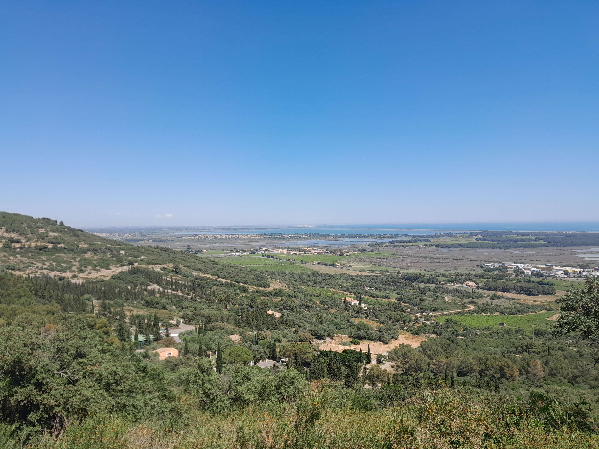
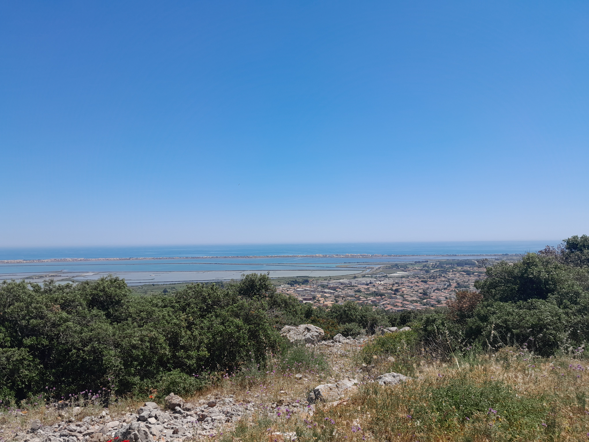
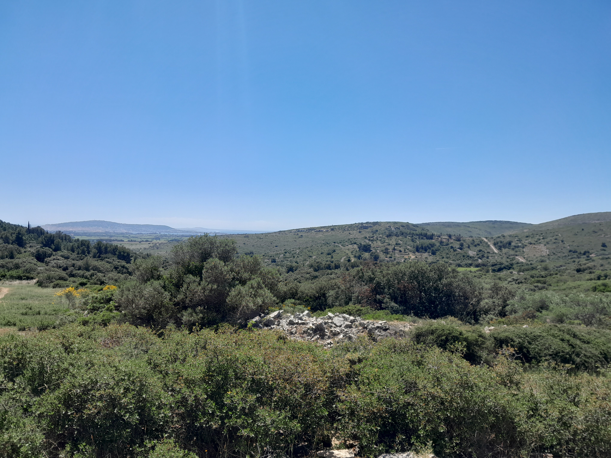
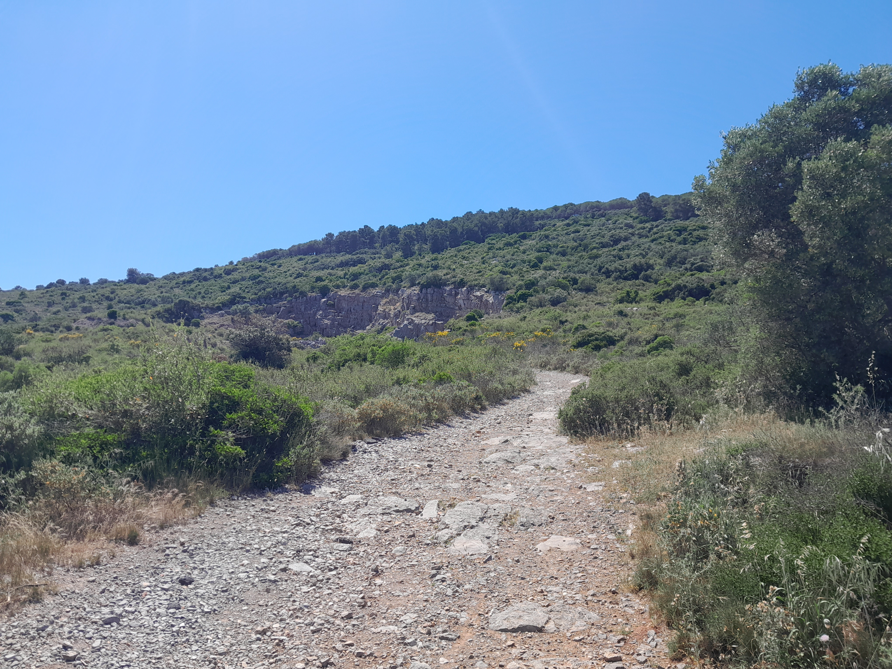

Les Balcons de Frontignan
Le massif de la Gardiole, situé entre Montpellier et Sète, est un espace naturel protégé classé « site pittoresque » et reconnu ZNIEFF. Cette chaîne calcaire culminant à 234 mètres et s’étendant sur 18 kilomètres de long et 4 kilomètres de large, offre de superbes panoramas sur les étangs de Thau et d’Ingril, les vignobles de Frontignan ainsi que sur la Méditerranée. Ce massif abrite plus de 700 espèces végétales et plus de 120 espèces d’oiseaux et de reptiles. Cette randonnée parcourt les Balcons de Frontignan, dans la partie sud du massif. Vous pourrez y découvrir deux sommets, le Pioch Michel et le Pioch Madame , tout en profitant de splendides vues sur les paysages de l’Hérault et les vignobles de Frontignan, réputés pour leur muscat. Cette balade facile est idéale pour les familles comme pour les traileurs en quête de nature et de beaux panoramas.
Dernière vérification du parcours : 22/05/2026
Départ:
Frotignan (Halle des Sports Nikola Karabatic)
Informations
Type : familiale, boucle
Type de patrique : marche, trail
Sens conseillé : horraire
Difficulté: 2/5
Technicité : 2/5
Accessible aux animaux de compagnie : oui (en laisse)
Accessible aux fauteuils roulants : non
Précautions
Cette randonnée ne suit pas de balisage. Il est conseillé de télécharger la trace GPX disponible sur cette page afin de pouvoir suivre l’itinéraire à l’aide d’un GPS si nécessaire. Cet espace étant un site naturel protégé, veillez à respecter la faune et la flore afin de préserver ce lieu exceptionnel. Si vous réalisez cette randonnée avec des animaux de compagnie, il est recommandé de les tenir en laisse afin de préserver la biodiversité du massif. Certaines zones peuvent également être concernées par des activités de chasse, généralement entre septembre et février. Pensez à vous renseigner au préalable et, dans la mesure du possible, à éviter ces secteurs les jours de chasse ou à prendre toutes les précautions nécessaires.
Pour voir les périodes de chasse en Occitanie : chasse-nature-occitanie.fr
Matérielles
Il est recommandé de porter des chaussures de marche adaptées et de prévoir une réserve d’eau suffisante.
Etape 1
Cette première section vous mènera dans le massif de la Gardiole, offrant de magnifiques vues sur Frontignan, les étangs et la mer. Depuis le parking de la Halle des Sports Nikola Karabatic, suivez la trace GPX afin d’entamer une montée sur un chemin de graviers en direction du Pioch Michel, un mont du massif de la Gardiole. Vous pourrez notamment apercevoir la ferme Dromasud, qui propose des balades en dromadaire. Une fois arrivé au pied du mont Pioch Michel (151 m), réalisez-en le tour dans le sens horaire. Un parcours sportif de 1,30 km comprenant 10 exercices est aménagé tout au long du circuit, avec un panneau d’information permettant de se renseigner sur le parcours. En suivant la trace GPX, vous pourrez également gravir le sommet afin de profiter d’une splendide vue sur Frontignan, l’étang d’Ingril et la Méditerranée. Après avoir bouclé le tour du Pioch Michel, poursuivez votre itinéraire pour gravir un autre mont : le Pioch Madame (148 m), qui offre lui aussi un très beau panorama. Redescendez ensuite le mont en suivant la trace GPX par un chemin accidenté afin de rejoindre les vignobles de Frontignan.


Etape 2
Cette section serpente au pied du massif de la Gardiole, le long des vignes. Vous pourrez profiter de plusieurs vues sur Frontignan et le massif de la Gardiole. Après être redescendu au niveau des vignes, tournez à droite afin d’emprunter un chemin longeant les vignobles au pied du massif. Continuez à suivre la trace GPX jusqu’à une longue étendue de gravier. Traversez-la sur toute sa longueur en suivant l’itinéraire. Vous rejoindrez ensuite un chemin permettant de rallier le parking de la Halle des Sports Nikola Karabatic.

